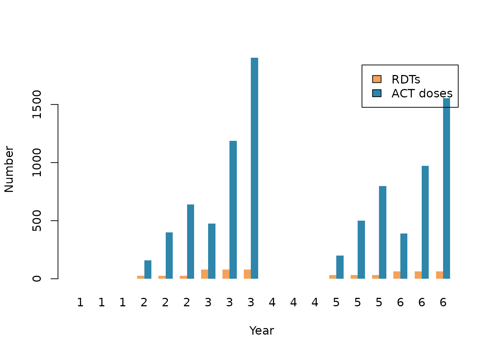

Simple-example
simple-example.Rmd
library(treasure)This vignette provides a brief example of estimating the number of commodities required for a simple scenario and how these can be converted into costs. We use two small data sets as examples.
Bed nets
First we consider some basic intervention information that includes
population at risk (par) and a target level of insecticide
treated net (ITN) usage by year.
interventions <- data.frame(
year = 1:6,
itn_use = c(0, 0.6, 0.5, 0.2, 0.5, 0.4),
par = rep(1000, 6)
)
interventions
#> year itn_use par
#> 1 1 0.0 1000
#> 2 2 0.6 1000
#> 3 3 0.5 1000
#> 4 4 0.2 1000
#> 5 5 0.5 1000
#> 6 6 0.4 1000To determine how many nets are required we can use
commodity_nets(). Here we assume a constant usage rate,
distributions on the first day of each year, and a half life of two
years.
dist_steps <- cumsum(c(1, rep(365, 5)))
crop_steps <- dist_steps + 183
half_life <- 730
use_rate <- 0.5
interventions$n_nets <- commodity_nets(
usage = interventions$itn_use,
use_rate = use_rate,
distribution_timesteps = dist_steps,
crop_timesteps = crop_steps,
half_life = half_life,
par = interventions$par
)
interventions$cost_nets <- cost_llin(interventions$n_nets)
interventions
#> year itn_use par n_nets cost_nets
#> 1 1 0.0 1000 0 0.00
#> 2 2 0.6 1000 1057 3720.64
#> 3 3 0.5 1000 306 1077.12
#> 4 4 0.2 1000 0 0.00
#> 5 5 0.5 1000 839 2953.28
#> 6 6 0.4 1000 29 102.08
barplot(
interventions$n_nets,
names.arg = interventions$year,
col = "#2E86AB",
border = NA,
xlab = "Year",
ylab = "Number of nets"
)Nets required by year
Cases
The second example uses case data by year and age band. For simplicity we assume constant treatment coverage and diagnostic usage.
cases <- data.frame(
year = rep(1:6, each = 3),
age_lower = rep(c(0, 5, 15), 6),
age_upper = rep(c(5, 15, 100), 6),
cases = rep(rpois(6, 100), each = 3),
tx_cov = rep(c(0, 0.3, 0.8), each = 3),
par = rep(300, 6 * 3)
)
cases
#> year age_lower age_upper cases tx_cov par
#> 1 1 0 5 85 0.0 300
#> 2 1 5 15 85 0.0 300
#> 3 1 15 100 85 0.0 300
#> 4 2 0 5 89 0.3 300
#> 5 2 5 15 89 0.3 300
#> 6 2 15 100 89 0.3 300
#> 7 3 0 5 99 0.8 300
#> 8 3 5 15 99 0.8 300
#> 9 3 15 100 99 0.8 300
#> 10 4 0 5 106 0.0 300
#> 11 4 5 15 106 0.0 300
#> 12 4 15 100 106 0.0 300
#> 13 5 0 5 111 0.3 300
#> 14 5 5 15 111 0.3 300
#> 15 5 15 100 111 0.3 300
#> 16 6 0 5 81 0.8 300
#> 17 6 5 15 81 0.8 300
#> 18 6 15 100 81 0.8 300We can estimate the number of rapid diagnostic tests (RDTs) and ACT
doses required using commodity_rdt_tests() and
commodity_al_doses(). The age specific dose multipliers are
determined by the age_upper values.
prop_rdt <- 1
prop_act <- 1
cases$n_rdt <- commodity_rdt_tests(
n_cases = cases$cases,
treatment_coverage = cases$tx_cov,
proportion_rdt = prop_rdt
)
cases$n_act_doses <- commodity_al_doses(
n_cases = cases$cases,
treatment_coverage = cases$tx_cov,
proportion_act = prop_act,
age_upper = cases$age_upper
)
cases
#> year age_lower age_upper cases tx_cov par n_rdt n_act_doses
#> 1 1 0 5 85 0.0 300 0 0
#> 2 1 5 15 85 0.0 300 0 0
#> 3 1 15 100 85 0.0 300 0 0
#> 4 2 0 5 89 0.3 300 27 160
#> 5 2 5 15 89 0.3 300 27 400
#> 6 2 15 100 89 0.3 300 27 641
#> 7 3 0 5 99 0.8 300 79 475
#> 8 3 5 15 99 0.8 300 79 1188
#> 9 3 15 100 99 0.8 300 79 1901
#> 10 4 0 5 106 0.0 300 0 0
#> 11 4 5 15 106 0.0 300 0 0
#> 12 4 15 100 106 0.0 300 0 0
#> 13 5 0 5 111 0.3 300 33 200
#> 14 5 5 15 111 0.3 300 33 499
#> 15 5 15 100 111 0.3 300 33 799
#> 16 6 0 5 81 0.8 300 65 389
#> 17 6 5 15 81 0.8 300 65 972
#> 18 6 15 100 81 0.8 300 65 1555Costs can then be added using the corresponding costing functions.
cases$cost_rdt <- cost_rdt(cases$n_rdt)
cases$cost_act <- cost_al(cases$n_act_doses)
head(cases)
#> year age_lower age_upper cases tx_cov par n_rdt n_act_doses cost_rdt
#> 1 1 0 5 85 0.0 300 0 0 0.00000
#> 2 1 5 15 85 0.0 300 0 0 0.00000
#> 3 1 15 100 85 0.0 300 0 0 0.00000
#> 4 2 0 5 89 0.3 300 27 160 15.79003
#> 5 2 5 15 89 0.3 300 27 400 15.79003
#> 6 2 15 100 89 0.3 300 27 641 15.79003
#> cost_act
#> 1 0.00000
#> 2 0.00000
#> 3 0.00000
#> 4 53.06458
#> 5 132.66146
#> 6 212.58999
barplot(
rbind(cases$n_rdt, cases$n_act_doses),
beside = TRUE,
names.arg = cases$year,
legend.text = c("RDTs", "ACT doses"),
col = c("#F4A259", "#2E86AB"),
border = NA,
xlab = "Year",
ylab = "Number"
)
RDTs and ACT doses by year
The examples above show the basic approach for moving from site input and model output data to estimates of commodity requirements and associated costs. More complex scenarios can be handled in the same way by adjusting the input arguments to the commodity and costing functions.